본 포스트는 Youngwoon Lee 교수님의 Deep Reinforcement Learning 강의 자료 중 Lecture 03-1 — Actor-critic methods (총 35장)를 바탕으로, 강의를 처음 듣는 독자도 논리적 흐름을 따라갈 수 있도록 재구성한 것입니다. 원본 슬라이드는 영문으로 작성되어 있으며, 본문의 대섹션은 슬라이드 제목을 그대로 차용하되 같은 제목이 연달아 나오는 슬라이드는 하나로 묶었습니다. 두 번 등장하는 Plan for today 슬라이드(policy gradient recap → reducing variance of policy gradient: reward to go · value functions · baseline · advantage)는 목차 역할만 하므로 별도 섹션으로 두지 않았습니다. 앞부분의 정책 경사 복습(3–6쪽)은 앞 회차 03. Policy Gradient Methods 포스트와 내용이 겹치지만, 이번 강의 전체가 “그 추정량의 분산을 어떻게 깎을 것인가”라는 물음 위에 서 있으므로 생략하지 않고 짚고 넘어갑니다. 본문의 대섹션 번호는 원본 슬라이드에 없는 것을 읽기 편하도록 붙인 것입니다.
한 줄 요약 (TL;DR)
“정책 경사식에서 로그 확률에 곱해지는 가중치를 무엇으로 둘 것인가 — 그 한 자리를 깎아 나가면 이점(advantage)에 도달하고, 그것을 학습된 함수로 채우는 순간 actor-critic이 됩니다.”
지난 회차는 \(\nabla_\theta J(\theta) \approx \frac{1}{N}\sum_i \big(\sum_t \nabla_\theta \log \pi_\theta(\mathbf{a}_t^i \mid \mathbf{s}_t^i)\big) r(\tau^i)\)라는 REINFORCE 추정량을 손에 쥐여 주고, 그 대가가 고분산과 온폴리시라는 두 약점이라는 진단까지 내렸습니다. 이번 회차는 그중 분산을 정면으로 공격합니다. 무기는 셋입니다. ① 인과성(causality) — 시각 \(t\)의 행동은 그 이전의 보상에 영향을 줄 수 없으므로, 가중치에서 과거 보상을 떼어 내 남은 보상(reward to-go) \(R_t(\tau)\)만 남깁니다. 떼어 낸 항은 기댓값이 0이지만 분산은 0이 아니므로, 제거하면 같은 기댓값에 더 작은 분산을 얻습니다. ② 가치 함수(value function) — 한 궤적에서 실제로 벌어진 \(R_t(\tau)\)를 여러 궤적에 걸친 기댓값 \(Q^{\pi_\theta}\)로 바꾸면 환경의 우연이 평균되어 사라집니다. ③ 베이스라인(baseline) — 행동과 무관한 \(b(\mathbf{s}_t)\)를 빼도 기댓값은 그대로이고, \(R_t(\tau) - b(\mathbf{s}_t) \approx 0\)이 되도록 \(b\)를 고르면 분산이 줄어듭니다. \(b\)는 \(\mathbf{s}_t\)에만 의존해야 하므로 최선의 선택은 상태 가치 \(V^{\pi_\theta}(\mathbf{s}_t)\)이고, 여기에 ②를 겹치면 가중치가 \(Q^{\pi_\theta} - V^{\pi_\theta} = A^{\pi_\theta}\), 곧 이점이 됩니다. 남은 일은 \(V_\phi\) · \(Q_\phi\)를 시간차 학습(TD learning)으로 적합시키는 것뿐이며, 그렇게 정책(actor)이 가치 함수(critic)로부터 배우는 구조가 actor-critic입니다. 그 부산물로 전체 궤적을 기다리지 않고 \(N\) 스텝마다 갱신할 수 있게 되어, REINFORCE보다 훨씬 표본 효율적인 알고리즘이 됩니다.
1. 직접 정책 미분 (Direct Policy Differentiation)
강의는 지난 회차의 유도를 두 장에 걸쳐 압축해 다시 보여 주며 시작합니다. 이번 강의가 고칠 대상이 바로 그 결과물이기 때문입니다.
1.1 기댓값을 적분으로 되돌리고, 로그를 씌운다
최대화하려는 것은 정책 \(\pi_\theta\) 아래에서의 기대 누적 보상입니다.
\[ J(\theta) = \mathbb{E}_{\tau \sim \pi_\theta(\tau)} \sum_t r(\mathbf{s}_t, \mathbf{a}_t) = \mathbb{E}_{\tau \sim \pi_\theta(\tau)} \, r(\tau) = \int \pi_\theta(\tau) \, r(\tau) \, d\tau \]
여기서 \(r(\tau) = \sum_{t=1}^{T} r(\mathbf{s}_t, \mathbf{a}_t)\)이고, 마지막 등호는 기댓값의 정의 \(\mathbb{E}_{x \sim p(x)} f(x) = \int p(x) f(x) dx\)를 반대로 쓴 것입니다. 이 형태 변환이 결정적입니다.
- 기댓값 형태 \(\mathbb{E}_{\tau \sim \pi_\theta(\tau)}[\cdot]\) — \(\theta\)가 기호 아래에 숨어 있어 미분할 방법을 모릅니다.
- 적분 형태 \(\int \pi_\theta(\tau) r(\tau) d\tau\) — \(\theta\)가 피적분함수 안의 명시적 인수로 드러나 미분할 수 있습니다.
미분한 뒤, 확률분포를 되살리기 위해 로그 미분 항등식을 씁니다.
\[ \nabla_\theta J(\theta) = \int \nabla_\theta \pi_\theta(\tau) \, r(\tau) \, d\tau = \int \pi_\theta(\tau) \, \nabla_\theta \log \pi_\theta(\tau) \, r(\tau) \, d\tau = \mathbb{E}_{\tau \sim \pi_\theta(\tau)} \big[ \nabla_\theta \log \pi_\theta(\tau) \, r(\tau) \big] \]
가운데 등식이 \(\nabla p(x) = p(x) \frac{\nabla p(x)}{p(x)} = p(x) \nabla \log p(x)\)입니다. 이 항등식은 4절에서 두 번째 용도로 다시 등장하며, 그때는 분산을 깎는 무기가 됩니다.
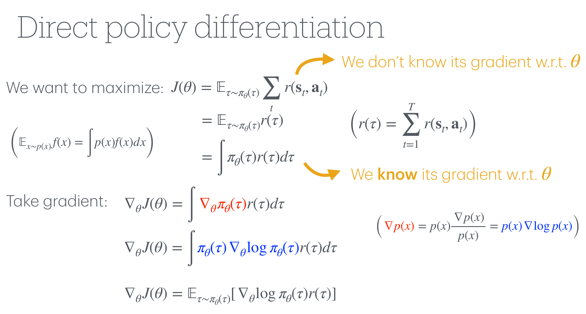
1.2 궤적의 로그 확률을 전개하면 정책만 남는다
남은 문제는 \(\nabla_\theta \log \pi_\theta(\tau)\) 안에 우리가 알 수 없는 전이 확률이 들어 있다는 점입니다. 궤적 확률을 분해해 로그를 씌우면,
\[ \pi_\theta(\tau) = p(\mathbf{s}_1) \prod_{t=1}^{T} \pi_\theta(\mathbf{a}_t \mid \mathbf{s}_t) \, p(\mathbf{s}_{t+1} \mid \mathbf{s}_t, \mathbf{a}_t) \]
\[ \log \pi_\theta(\tau) = \log p(\mathbf{s}_1) + \sum_{t=1}^{T} \Big[ \log \pi_\theta(\mathbf{a}_t \mid \mathbf{s}_t) + \log p(\mathbf{s}_{t+1} \mid \mathbf{s}_t, \mathbf{a}_t) \Big] \]
가 되고, \(\theta\)로 미분하면 \(\theta\)를 포함하지 않는 두 항이 통째로 탈락합니다.
\[ \nabla_\theta \log \pi_\theta(\tau) = \nabla_\theta \Big[ \underbrace{\log p(\mathbf{s}_1)}_{\to \, 0} + \sum_{t=1}^{T} \log \pi_\theta(\mathbf{a}_t \mid \mathbf{s}_t) + \underbrace{\log p(\mathbf{s}_{t+1} \mid \mathbf{s}_t, \mathbf{a}_t)}_{\to \, 0} \Big] = \sum_{t=1}^{T} \nabla_\theta \log \pi_\theta(\mathbf{a}_t \mid \mathbf{s}_t) \]
대입하면 최종 경사식이 나옵니다.
\[ \nabla_\theta J(\theta) = \mathbb{E}_{\tau \sim \pi_\theta(\tau)} \Big[ \Big( \sum_{t=1}^{T} \nabla_\theta \log \pi_\theta(\mathbf{a}_t \mid \mathbf{s}_t) \Big) r(\tau) \Big] \]
강의가 붙여 놓은 주석대로, 이것은 “궤적 확률의 경사가 아니라 정책의 경사”입니다.
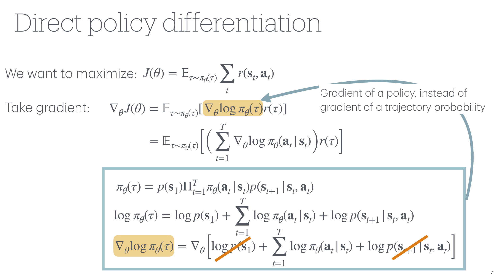
2. 정책 경사 (Policy Gradient)
\(r(\tau)\)를 다시 풀어 쓰면 경사는 두 개의 합이 곱해진 형태가 되고, 기댓값은 표본평균으로 근사합니다.
\[ \nabla_\theta J(\theta) = \mathbb{E}_{\tau \sim \pi_\theta(\tau)} \Big[ \Big( \sum_{t=1}^{T} \nabla_\theta \log \pi_\theta(\mathbf{a}_t \mid \mathbf{s}_t) \Big) \Big( \sum_{t=1}^{T} r(\mathbf{s}_t, \mathbf{a}_t) \Big) \Big] \]
\[ \approx \frac{1}{N} \sum_{i=1}^{N} \Big( \sum_{t=1}^{T} \nabla_\theta \log \pi_\theta(\mathbf{a}_t^i \mid \mathbf{s}_t^i) \Big) \Big( \sum_{t=1}^{T} r(\mathbf{s}_t^i, \mathbf{a}_t^i) \Big) \]
\(\pi_\theta\)에서 표본을 뽑는 일은 곧 정책을 롤아웃하는 일이므로 이 근사는 실제로 수행 가능하며, 표본을 뽑는 분포와 기댓값을 취하는 분포가 같으므로 이 추정량은 불편(unbiased)합니다.
다음 세 단계를 반복합니다.
- 표본 수집: \(\pi_\theta(\mathbf{a}_t \mid \mathbf{s}_t)\)를 롤아웃해 궤적 집합 \(\{\tau^i\}\)를 모읍니다.
- 경사 추정: \[ \nabla_\theta J(\theta) \approx \frac{1}{N} \sum_{i} \Big( \sum_{t} \nabla_\theta \log \pi_\theta(\mathbf{a}_t^i \mid \mathbf{s}_t^i) \Big) \Big( \sum_{t} r(\mathbf{s}_t^i, \mathbf{a}_t^i) \Big) \]
- 파라미터 갱신: \(\theta' \leftarrow \theta + \alpha \nabla_\theta J(\theta)\)
궤적은 \(\tau = (\mathbf{s}_1, \mathbf{a}_1, \ldots, \mathbf{s}_T, \mathbf{a}_T, \mathbf{s}_{T+1})\)이며, 최대화 문제이므로 경사 상승(ascent)을 씁니다.
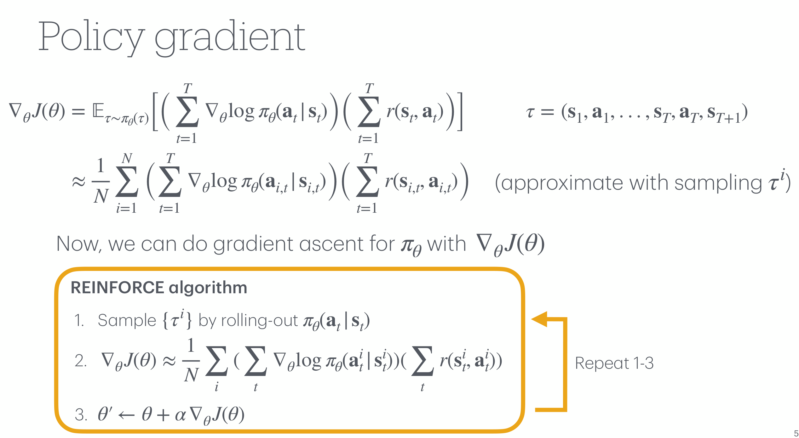
3. 정책 경사법 요약 (Summary of Policy Gradient Methods)
강의는 정책 경사법의 성질을 장점 하나와 단점 둘로 정리합니다. 이번 회차가 공격할 지점이 여기서 확정됩니다.
| 부호 | 성질 | 내용 |
|---|---|---|
| (+) | 참 목적함수에 대한 경사 상승 | 높은 보상을 준 행동은 더 자주(more likely), 낮은 보상을 준 행동은 덜 자주(less likely) 하도록 확률을 옮깁니다 |
| (−) | 고분산 경사 | 표본을 통한 정책 경사 추정에는 큰 분산이 따라붙습니다 |
| (−) | 온폴리시 데이터 요구 | 유도 자체가 데이터가 현재 정책의 롤아웃에서 온다는 전제 위에 서 있습니다 |
지난 회차는 두 번째 항목 — 고분산 — 을 진단하고, 처방으로 두 갈래를 제시한 뒤 멈췄습니다. 표본 수 \(N\)을 키우는 길과 저분산 추정량을 쓰는 길이었고, 전자는 온폴리시 제약 때문에 비싸다는 결론까지 나왔습니다.
이번 회차는 남은 후자의 길을 끝까지 걷습니다. 즉 추정식
\[ \nabla_\theta J(\theta) \approx \frac{1}{N} \sum_{i=1}^{N} \Big( \sum_{t=1}^{T} \nabla_\theta \log \pi_\theta(\mathbf{a}_t^i \mid \mathbf{s}_t^i) \Big) \big( \, \boldsymbol{?} \, \big) \]
에서 오른쪽 괄호 하나만 바꿔 가며 분산을 깎아 내려갑니다. 왼쪽 괄호는 1절의 유도가 강제한 것이라 손댈 수 없습니다. 14절에서 이 물음표 자리가 네 개의 후보로 채워지는 것을 보게 될 텐데, 그 네 줄이 곧 이번 강의 전체의 목차입니다.
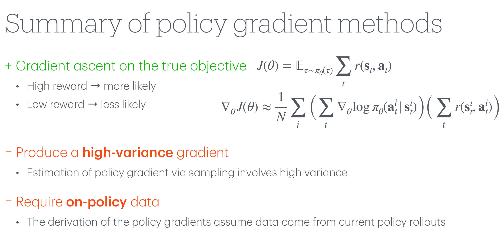
4. 유용한 수학 (Useful Math)
본격적인 유도에 앞서, 강의는 앞으로 세 번 쓰이게 될 항등식 두 개를 따로 한 장에 정리해 둡니다. 이 두 줄이 이번 강의에서 분산을 깎는 모든 논증의 공통 재료입니다.
(i) 로그 미분 항등식. 임의의 미분 가능한 확률밀도 \(p_\theta(x)\)에 대해
\[ p_\theta(x) \, \nabla_\theta \log p_\theta(x) = p_\theta(x) \frac{\nabla_\theta p_\theta(x)}{p_\theta(x)} = \nabla_\theta p_\theta(x) \]
즉 \(\nabla_\theta p_\theta(x) = p_\theta(x) \nabla_\theta \log p_\theta(x)\)입니다.
(ii) 로그 확률 경사의 기댓값은 0.
\[ \mathbb{E}_{x \sim p_\theta(x)} \nabla_\theta \log p_\theta(x) = 0 \]
4.1 (ii)의 단계별 유도
결과만 보면 신기하지만, 유도는 네 줄이면 끝납니다. 가정 → 정의 → 중간 단계 → 최종식의 순서로 따라가 보겠습니다.
1단계 (기댓값의 정의). 기댓값을 적분으로 되돌립니다.
\[ \mathbb{E}_{x \sim p_\theta(x)} \nabla_\theta \log p_\theta(x) = \int p_\theta(x) \, \nabla_\theta \log p_\theta(x) \, dx \]
2단계 (항등식 (i) 적용). 피적분함수가 통째로 \(\nabla_\theta p_\theta(x)\)로 바뀝니다.
\[ = \int \nabla_\theta p_\theta(x) \, dx \]
3단계 (미분과 적분의 교환). 적분 변수 \(x\)와 미분 변수 \(\theta\)가 서로 무관하므로 순서를 바꿀 수 있습니다.
\[ = \nabla_\theta \int p_\theta(x) \, dx \]
4단계 (정규화 조건). 확률밀도의 전체 적분은 \(\theta\)가 무엇이든 항상 1이고, 상수의 미분은 0입니다.
\[ = \nabla_\theta 1 = 0 \qquad \blacksquare \]
\(\mathbb{E}[\nabla_\theta \log p_\theta(x)] = 0\)은 통계학에서 점수 함수(score function)의 기댓값이 0이라는 표준적인 사실입니다. 실용적인 의미는 이렇습니다.
정책 경사식은 언제나 \(\mathbb{E}\big[ \nabla_\theta \log \pi_\theta(\mathbf{a}_t \mid \mathbf{s}_t) \times (\text{가중치}) \big]\)의 꼴입니다. 만약 그 가중치가 \(\mathbf{a}_t\)와 무관한 양이라면, 기댓값이 두 인수의 곱으로 분리되면서 \(\mathbb{E}[\nabla_\theta \log \pi_\theta] = 0\) 때문에 그 항 전체가 사라집니다.
즉 이 항등식은 “\(\mathbf{a}_t\)와 무관한 것은 경사에 아무 기여도 하지 않는다”는 면허증입니다. 5절에서는 이 면허로 시각 \(t\) 이전의 보상을 떼어 내고, 11절에서는 같은 면허로 베이스라인 \(b(\mathbf{s}_t)\)를 끼워 넣습니다. 두 조작 모두 기댓값을 바꾸지 않으면서 분산만 건드리는데, 그것이 가능한 근거가 이 한 줄입니다.
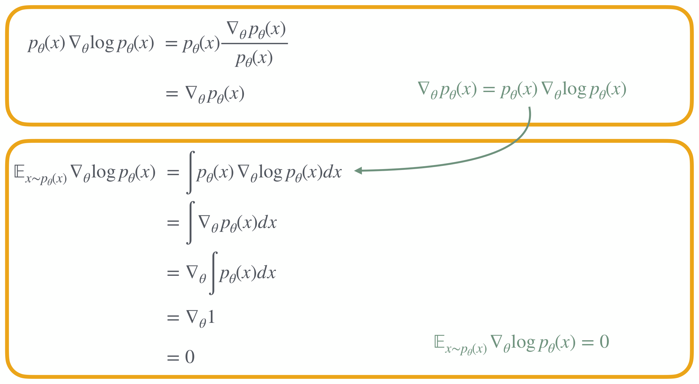
5. 남은 보상 (Reward to Go)
첫 번째 무기는 강의가 슬라이드 한 장을 통째로 할애해 선언한 인과성(causality)입니다.
\(\pi(\mathbf{a}_t \mid \mathbf{s}_t)\)는 \(r_1, \ldots, r_{t-1}\)에 영향을 주지 않으며, 그 역도 마찬가지입니다.
5.1 문제: 모든 타임스텝이 같은 가중치를 받고 있다
현재의 경사식을 \(t\)에 대한 합이 바깥으로 나오도록 다시 적어 보면 문제가 눈에 보입니다.
\[ \nabla_\theta J(\theta) = \mathbb{E}_{\tau \sim \pi_\theta(\tau)} \Big( \sum_{t=1}^{T} \nabla_\theta \log \pi_\theta(\mathbf{a}_t \mid \mathbf{s}_t) \Big) r(\tau) = \mathbb{E}_{\tau \sim \pi_\theta(\tau)} \sum_{t=1}^{T} \nabla_\theta \log \pi_\theta(\mathbf{a}_t \mid \mathbf{s}_t) \Big( \sum_{t'=1}^{T} r(\mathbf{s}_{t'}, \mathbf{a}_{t'}) \Big) \]
- 시각 \(t\)의 로그 확률 경사 \(\nabla_\theta \log \pi_\theta(\mathbf{a}_t \mid \mathbf{s}_t)\)에 곱해지는 가중치는 \(t\)가 무엇이든 똑같은 \(r(\tau)\)입니다.
- 그런데 그 합에는 \(t' = 1, \ldots, t-1\), 즉 행동 \(\mathbf{a}_t\)를 하기도 전에 이미 받은 보상이 들어 있습니다.
- 시간을 거스르는 인과는 없으므로, \(\mathbf{a}_t\)는 그 보상들을 만들어 낼 수 없었습니다. 강의의 주석대로, 가중치는 \(r(\tau)\)가 아니라 \(\sum_{t'=t}^{T} r(\mathbf{s}_{t'}, \mathbf{a}_{t'})\)여야 합니다.
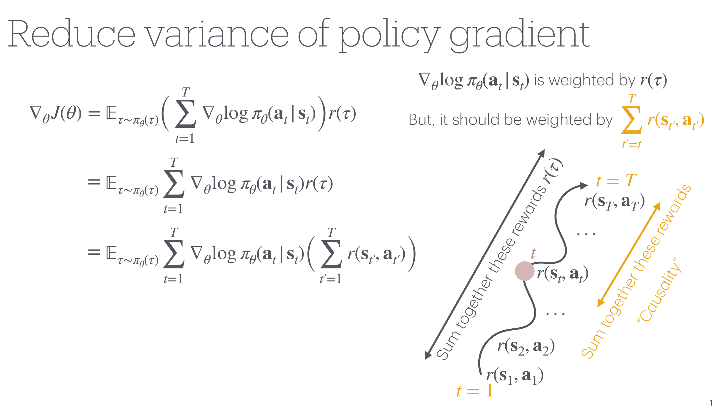
5.2 유도: 과거 보상 항은 기댓값이 0이다
직관이 맞다는 것을 식으로 확인합니다. 합의 구간 \([1, T]\)를 \([1, t-1]\)과 \([t, T]\)로 쪼갠 뒤 분배합니다.
\[ \nabla_\theta J(\theta) = \mathbb{E}_{\tau \sim \pi_\theta(\tau)} \sum_{t=1}^{T} \nabla_\theta \log \pi_\theta(\mathbf{a}_t \mid \mathbf{s}_t) \Big( \sum_{t'=1}^{t-1} r(\mathbf{s}_{t'}, \mathbf{a}_{t'}) + \sum_{t'=t}^{T} r(\mathbf{s}_{t'}, \mathbf{a}_{t'}) \Big) \]
\[ = \mathbb{E}_{\tau \sim \pi_\theta(\tau)} \sum_{t=1}^{T} \Big[ \underbrace{\nabla_\theta \log \pi_\theta(\mathbf{a}_t \mid \mathbf{s}_t) \sum_{t'=1}^{t-1} r(\mathbf{s}_{t'}, \mathbf{a}_{t'})}_{\text{(A) 과거 보상 항}} + \underbrace{\nabla_\theta \log \pi_\theta(\mathbf{a}_t \mid \mathbf{s}_t) \sum_{t'=t}^{T} r(\mathbf{s}_{t'}, \mathbf{a}_{t'})}_{\text{(B) 남은 보상 항}} \Big] \]
이제 (A)의 기댓값을 따져 봅니다. 인과성에 의해 \(\nabla_\theta \log \pi_\theta(\mathbf{a}_t \mid \mathbf{s}_t)\)와 \(\{r(\mathbf{s}_{t'}, \mathbf{a}_{t'})\}_{1:t-1}\)은 독립이므로 \(\mathbb{E}[AB] = \mathbb{E}[A]\mathbb{E}[B]\)가 성립하고,
\[ \sum_{t=1}^{T} \Big( \underbrace{\mathbb{E}_{\tau \sim \pi_\theta(\tau)} \nabla_\theta \log \pi_\theta(\mathbf{a}_t \mid \mathbf{s}_t)}_{= \, 0 \; (\S 4 \text{의 항등식 (ii)})} \Big) \Big( \mathbb{E}_{\tau \sim \pi_\theta(\tau)} \sum_{t'=1}^{t-1} r(\mathbf{s}_{t'}, \mathbf{a}_{t'}) \Big) = 0 \]
이 됩니다. 따라서 (A)를 통째로 지워도 기댓값은 변하지 않습니다.
\[ \nabla_\theta J(\theta) = \mathbb{E}_{\tau \sim \pi_\theta(\tau)} \sum_{t=1}^{T} \nabla_\theta \log \pi_\theta(\mathbf{a}_t \mid \mathbf{s}_t) \Big( \underbrace{\sum_{t'=t}^{T} r(\mathbf{s}_{t'}, \mathbf{a}_{t'})}_{R_t(\tau), \; \text{남은 보상}} \Big) \]
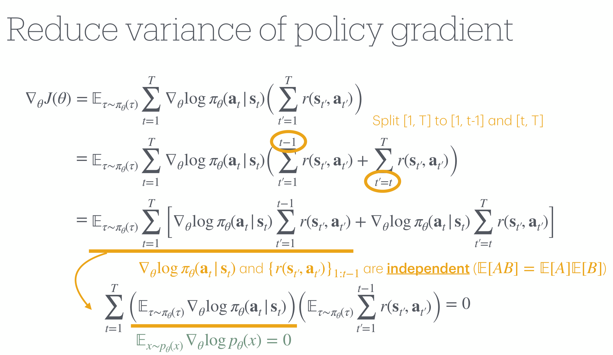
5.3 결과: 같은 기댓값, 더 작은 분산
여기가 이 절의 핵심입니다. 제거한 항 (A)에 대해 강의는 두 문장을 붙입니다.
“이 항은 평균이 0이지만 분산은 0이 아닙니다. 따라서 이것을 제거하면 정책 경사의 분산을 낮출 수 있습니다.”
제거한 항 (A)는 기댓값이 0이므로, 그것이 있든 없든 평균적으로는 같은 경사를 줍니다. 그러나 우리가 실제로 쓰는 것은 표본 하나로 계산한 값이고, (A)는 표본마다 양수였다 음수였다 하며 요동치는 확률변수입니다.
즉 (A)는 신호에는 아무것도 보태지 않으면서 잡음만 보태는 항입니다. 이런 항은 지우는 것이 언제나 이득입니다. 결과적으로 남은 보상 \(R_t(\tau) = \sum_{t'=t}^{T} r(\mathbf{s}_{t'}, \mathbf{a}_{t'})\)을 쓴 추정량은 기댓값은 그대로이고 분산만 작아진 추정량이 됩니다.
이번 강의에서 분산을 깎는 세 조작 — 인과성(5절), \(Q\)로의 교체(10절), 베이스라인(11–13절) — 은 모두 정확히 이 논리 구조를 따릅니다. 기댓값을 건드리지 않는 변형을 찾고, 그중 분산이 작아지는 쪽을 고른다.
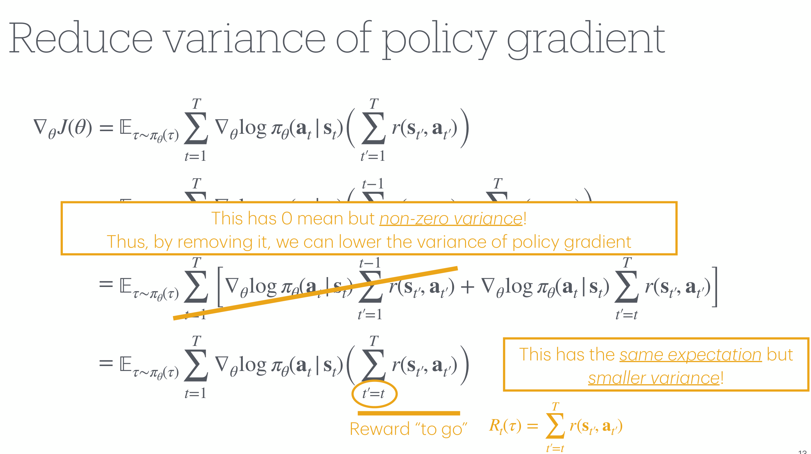
5.4 변형 전후를 나란히 놓고 보면
같은 궤적 그림 위에서 바뀐 것이 무엇인지를 강의는 색으로 대비시킵니다. 달라진 곳은 단 하나, 가중치로 쓰이는 보상 합의 시작 첨자입니다.
| 항목 | 변형 전 | 변형 후 |
|---|---|---|
| 가중치 | \(r(\tau) = \sum_{t'=1}^{T} r(\mathbf{s}_{t'}, \mathbf{a}_{t'})\) | \(R_t(\tau) = \sum_{t'=t}^{T} r(\mathbf{s}_{t'}, \mathbf{a}_{t'})\) |
| 의미 | 궤적 전체의 총보상 | 시각 \(t\) 이후에 실제로 받은 보상 |
| 기댓값 | \(\nabla_\theta J(\theta)\) | \(\nabla_\theta J(\theta)\) (동일) |
| 분산 | 크다 | 더 작다 |
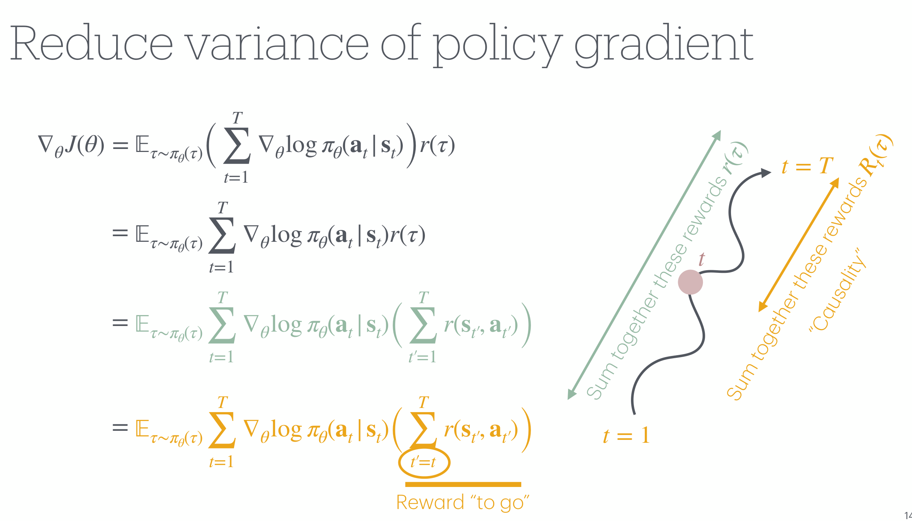
6. 가치 함수 (Value Functions)
인과성으로 얻은 \(R_t(\tau)\)는 단 하나의 궤적에서 실제로 벌어진 일입니다. 같은 상태에서 같은 행동을 해도 이후 전개는 매번 다르므로, 이 값에는 환경의 우연이 그대로 실려 있습니다. 그 우연을 평균으로 걷어 내려면 기댓값으로서의 “가치”를 정의해야 합니다.
정책 \(\pi\) 아래에서 두 가지 가치를 정의합니다.
상태 가치(state value, 줄여서 value) — 상태 \(\mathbf{s}_t\)에서 시작해 앞으로 받을 것으로 기대되는 총보상입니다.
\[ V^\pi(\mathbf{s}_t) = \sum_{t'=t}^{T} \mathbb{E}_{\tau \sim \pi(\tau \mid \mathbf{s}_t)} \big[ r(\mathbf{s}_{t'}, \mathbf{a}_{t'}) \big] \]
상태-행동 가치(state-action value, 줄여서 Q-value) — 상태 \(\mathbf{s}_t\)에서 행동 \(\mathbf{a}_t\)를 택했을 때 앞으로 받을 것으로 기대되는 총보상입니다.
\[ Q^\pi(\mathbf{s}_t, \mathbf{a}_t) = \sum_{t'=t}^{T} \mathbb{E}_{\tau \sim \pi(\tau \mid \mathbf{s}_t, \mathbf{a}_t)} \big[ r(\mathbf{s}_{t'}, \mathbf{a}_{t'}) \big] \]
두 가치는 서로를 통해 다시 쓸 수 있습니다.
\[ V^\pi(\mathbf{s}_t) = \mathbb{E}_{\mathbf{a}_t \sim \pi(\mathbf{a}_t \mid \mathbf{s}_t)} \big[ Q^\pi(\mathbf{s}_t, \mathbf{a}_t) \big], \qquad Q^\pi(\mathbf{s}_t, \mathbf{a}_t) = r(\mathbf{s}_t, \mathbf{a}_t) + \mathbb{E}_{\mathbf{s}_{t+1} \sim p(\mathbf{s}_{t+1} \mid \mathbf{s}_t, \mathbf{a}_t)} \big[ V^\pi(\mathbf{s}_{t+1}) \big] \]
두 식의 차이는 조건에 무엇이 들어가는가 하나뿐입니다.
- \(V^\pi\)는 \(\mathbf{s}_t\)만 고정하고, 행동은 정책에게 맡깁니다. 따라서 “이 상태에 서 있는 것 자체가 얼마나 좋은가”를 말합니다.
- \(Q^\pi\)는 \(\mathbf{s}_t\)와 \(\mathbf{a}_t\)를 둘 다 고정합니다. 따라서 “이 상태에서 하필 이 행동을 고르는 것이 얼마나 좋은가”를 말합니다. 강의가 붙인 말장난대로 “’Q’uality of action”입니다.
- 그래서 \(V^\pi\)는 \(Q^\pi\)를 정책에 대해 평균 낸 것이고, 거꾸로 \(Q^\pi\)는 한 스텝의 보상 + 다음 상태의 가치로 풀어 쓸 수 있습니다. 이 재귀 관계가 다음 절의 벨만 방정식입니다.
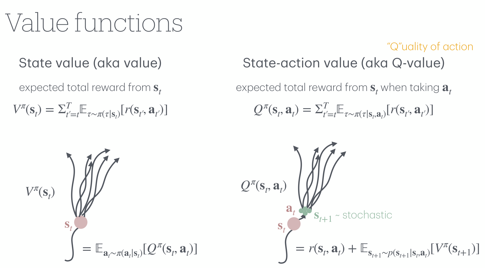
7. “가치”들의 요약 (Summary of “Value”s)
강의는 세 가지 가치를 한 장에 모으고, 각각에 벨만 방정식(Bellman equation) 형태를 붙여 정리합니다.
7.1 세 가지 가치
| 이름 | 기호 | 정의식 | 읽는 법 |
|---|---|---|---|
| 상태-행동 가치 (Q-value) | \(Q^\pi(\mathbf{s}_t, \mathbf{a}_t)\) | \(\Sigma_{t'=t}^{T} \mathbb{E}_{\tau \sim \pi(\tau \mid \mathbf{s}_t, \mathbf{a}_t)}[r(\mathbf{s}_{t'}, \mathbf{a}_{t'})]\) | \(\mathbf{s}_t\)에서 \(\mathbf{a}_t\)를 택해 얻는 총보상 |
| 상태 가치 (value) | \(V^\pi(\mathbf{s}_t)\) | \(\mathbb{E}_{\mathbf{a}_t \sim \pi(\mathbf{a}_t \mid \mathbf{s}_t)}[Q^\pi(\mathbf{s}_t, \mathbf{a}_t)]\) | \(\mathbf{s}_t\)에서 얻는 총보상 |
| 이점 (advantage) | \(A^\pi(\mathbf{s}_t, \mathbf{a}_t)\) | \(Q^\pi(\mathbf{s}_t, \mathbf{a}_t) - V^\pi(\mathbf{s}_t)\) | \(\mathbf{a}_t\)가 평균적인 \(\pi\)보다 얼마나 나은가 |
7.2 벨만 방정식
두 가치는 각각 한 스텝 앞으로 펼치는 재귀식을 만족합니다. 이것이 벨만 방정식입니다.
\[ Q^\pi(\mathbf{s}_t, \mathbf{a}_t) = r_t + \mathbb{E}_{\mathbf{s}_{t+1} \sim p(\cdot \mid \mathbf{s}_t, \mathbf{a}_t)} \big[ V^\pi(\mathbf{s}_{t+1}) \big] = r_t + \mathbb{E}_{\mathbf{s}_{t+1} \sim p(\cdot \mid \mathbf{s}_t, \mathbf{a}_t)} \Big[ \mathbb{E}_{\mathbf{a}_{t+1} \sim \pi(\cdot \mid \mathbf{s}_{t+1})} \big[ Q^\pi(\mathbf{s}_{t+1}, \mathbf{a}_{t+1}) \big] \Big] \]
\[ V^\pi(\mathbf{s}_t) = r_t + \mathbb{E}_{\mathbf{a}_t \sim \pi(\mathbf{a}_t \mid \mathbf{s}_t), \, \mathbf{s}_{t+1} \sim p(\cdot \mid \mathbf{s}_t, \mathbf{a}_t)} \big[ V^\pi(\mathbf{s}_{t+1}) \big] \]
\(A^\pi = Q^\pi - V^\pi\)를 두 가치의 정의에 비추어 읽으면 이렇게 됩니다.
- \(Q^\pi(\mathbf{s}_t, \mathbf{a}_t)\)는 “\(\mathbf{s}_t\)에서 \(\mathbf{a}_t\)를 골랐을 때”의 기대 총보상이고,
- \(V^\pi(\mathbf{s}_t)\)는 “\(\mathbf{s}_t\)에서 정책이 하던 대로 골랐을 때”의 기대 총보상입니다.
따라서 그 차이는 “이 상태에서 평소와 다르게 \(\mathbf{a}_t\)를 고른 것이 이득이었는가”를 잰 값입니다. \(A^\pi > 0\)이면 평균보다 나은 행동, \(A^\pi < 0\)이면 평균보다 못한 행동입니다.
이 해석이 중요한 이유는 정책 경사의 가중치로 쓰일 때 드러납니다. \(Q^\pi\)를 그대로 가중치로 쓰면 상태가 좋아서 생긴 점수까지 행동의 공으로 돌아갑니다. 반면 \(A^\pi\)를 쓰면 상태 자체의 기여가 \(V^\pi\)로 상쇄되어, 순수하게 행동 선택의 차이만 남습니다. 13절에서 바로 이 성질 때문에 이점이 최종 선택지가 됩니다.
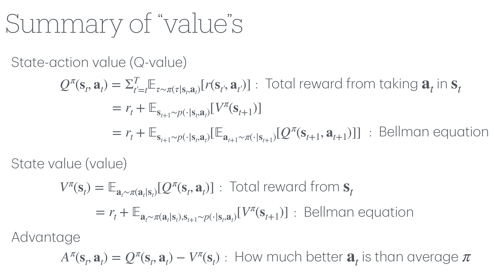
8. 상태 가치 함수 적합 (Fit State Value Function)
가치가 무엇인지는 정의했지만, 우리에게는 참값 \(V^{\pi_\theta}(\mathbf{s})\)가 주어지지 않습니다. 가진 것은 롤아웃이 남긴 삼중항 \(\{(\mathbf{s}_t^i, \mathbf{a}_t^i, r_t^i)\}\)뿐입니다. 그래서 파라미터 \(\phi\)를 갖는 신경망 \(V_\phi^{\pi_\theta}(\mathbf{s})\)를 두고 지도학습으로 적합시킵니다.
8.1 이상적인 목표에서 실행 가능한 목표까지
1단계 (이상적인 목표). 참 정의를 그대로 쓰면 목표값은 다음과 같습니다.
\[ y_t^i = \sum_{t'=t}^{T} \mathbb{E}_{\tau \sim \pi_\theta(\tau \mid \mathbf{s}_t^i)} \big[ r(\mathbf{s}_{t'}, \mathbf{a}_{t'}) \big] \]
그러나 이 값을 알려면 \(\mathbf{s}_t^i\)에서 출발하는 궤적을 무수히 많이 뽑아 평균 내야 하므로 그대로는 쓸 수 없습니다.
2단계 (첫 항 분리). 합에서 \(t' = t\) 항만 떼어 냅니다. 그 항은 이미 관측된 보상 \(r_t^i\)이므로 기댓값을 취할 필요가 없습니다.
\[ \approx r_t^i + \sum_{t'=t+1}^{T} \mathbb{E}_{\tau \sim \pi_\theta(\tau \mid \mathbf{s}_{t+1}^i)} \big[ r(\mathbf{s}_{t'}, \mathbf{a}_{t'}) \big] \]
3단계 (자기 자신으로 대체). 뒤에 남은 합은 정의상 \(V^{\pi_\theta}(\mathbf{s}_{t+1}^i)\)입니다. 이것도 모르지만, 지금 학습 중인 신경망의 현재 추정값으로 대신 채워 넣습니다.
\[ y_t^i \approx r_t^i + V_\phi^{\pi_\theta}(\mathbf{s}_{t+1}^i) \qquad \text{(시간차 목표, TD target)} \]
4단계 (지도 회귀). 이제 입력–목표 쌍이 갖춰졌으므로 평범한 제곱오차 회귀 문제가 됩니다.
\[ \mathcal{L}(\phi) = \frac{1}{2} \sum_i \big\| \underbrace{V_\phi^{\pi_\theta}(\mathbf{s}^i) - y_i}_{\text{시간차 오차, TD error}} \big\|^2 \]
이렇게 자기 자신의 현재 추정값을 목표에 끼워 넣는 방식을 부트스트랩(bootstrapped) 추정이라 부르며, 갱신 규칙을 줄여 쓰면 \(V_\phi^{\pi_\theta}(\mathbf{s}) \leftarrow r + V_\phi^{\pi_\theta}(\mathbf{s}')\)가 됩니다. 이것이 시간차 학습(TD learning)입니다.
3단계에서 한 일을 다시 보면 이상한 점이 있습니다. 아직 학습이 덜 된 \(V_\phi\)의 출력을, 그 \(V_\phi\)를 학습시킬 목표값으로 쓰고 있습니다. 지도학습의 관점에서 레이블이 모형 자신에게서 나오는 셈이니, 목표가 파라미터와 함께 계속 움직입니다.
그럼에도 이 방식이 성립하는 이유는 \(r_t^i\)라는 실제 관측이 매 갱신마다 한 스텝씩 주입되기 때문입니다. 부트스트랩 항 \(V_\phi(\mathbf{s}_{t+1})\)이 아무리 부정확해도, 거기에 더해지는 \(r_t^i\)는 환경에서 온 참값이라 추정이 조금씩 참값 쪽으로 끌려갑니다.
그 대가로 이 추정은 편향(bias)을 갖습니다. 전체 궤적을 끝까지 더한 몬테카를로 목표 \(\sum_{t'=t}^{T} r_{t'}^i\)는 불편하지만 분산이 크고, TD 목표 \(r_t^i + V_\phi(\mathbf{s}_{t+1}^i)\)는 분산이 작지만 편향됩니다. 이 맞교환의 중간 지점을 조절하는 장치가 다음 회차에 예고된 N-step return입니다.
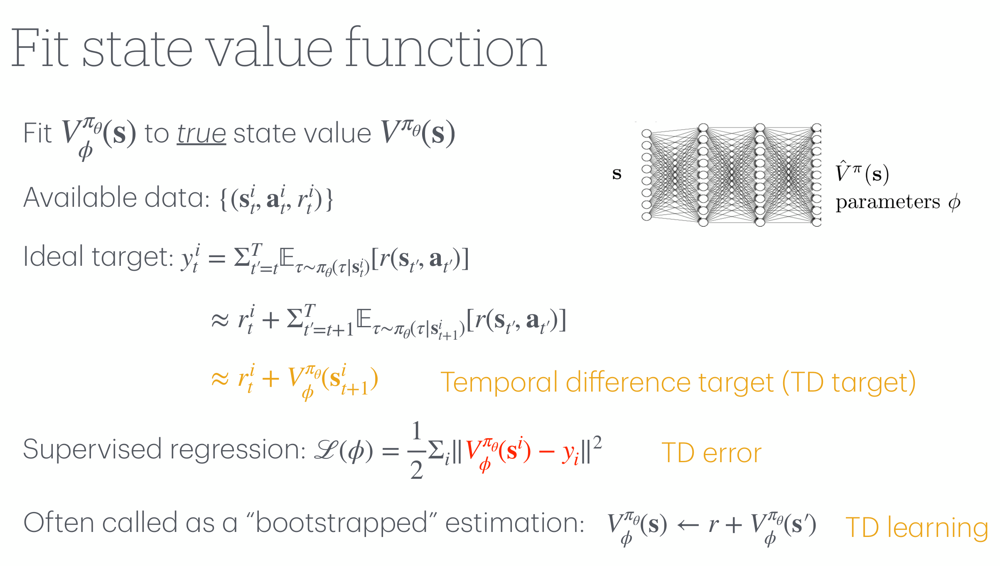
9. 할인 인자 (Discount Factor)
가치 함수를 정의하고 나면 곧바로 실무적인 문제가 하나 따라붙습니다. 에피소드가 끝나지 않으면 어떻게 되는가?
9.1 왜 미래 보상을 깎는가
\[ \text{최대화 대상: } \; \sum_{t=1}^{T} r_t \quad \longrightarrow \quad \sum_{t=1}^{T} \gamma^{t-1} r_t \qquad (\gamma \in [0, 1]) \]
- 큰 \(\gamma\) → 먼 미래의 보상도 눈앞의 보상만큼 중요하게 칩니다.
- 작은 \(\gamma\) → 단기 보상에 집중하고 장기 보상은 사실상 무시합니다.
- 실무에서는 주로 \(\gamma \sim 0.99\)를 씁니다.
강의가 든 이유는 셋입니다.
- 발산 방지: 에피소드 길이 \(T\)가 \(\infty\)이면 \(\sum_{t=1}^{T} r_t\)가 무한대가 될 수 있습니다. 할인을 넣으면 등비급수가 되어 유한한 값으로 수렴합니다.
- 수렴 성질: 학습 알고리즘에 좋은 수렴 성질을 제공합니다.
- 해석: 보상은 늦게보다 일찍 받는 편이 낫습니다. 강의는 이를 매 스텝 확률 \(1 - \gamma\)로 죽을 수 있다고 생각하면 된다고 설명합니다.
슬라이드 오른쪽 위의 작은 예시가 감각을 잡아 줍니다. \(\gamma = 0.9\)라면 보상열 \(r_1, r_2, r_3, r_4, r_5\)는 각각 \(r_1,\; 0.9 r_2,\; 0.9^2 r_3,\; 0.9^3 r_4,\; 0.9^4 r_5\)로 깎이고, 마지막 항은 \(0.9^4 \approx 0.6\)이므로 원래의 60% 정도만 남습니다.
“죽을 확률” 해석을 여기에 대 보면 이렇습니다. 매 스텝 \(1 - \gamma = 0.1\)의 확률로 에피소드가 끝나 버린다면, 다섯 번째 보상을 실제로 받아 낼 확률은 \(0.9^4 \approx 0.6\)입니다. 즉 할인은 임의로 집어넣은 편의 장치가 아니라, “그 보상까지 살아남을 확률”로 가중한 기댓값이라고 읽을 수 있습니다.
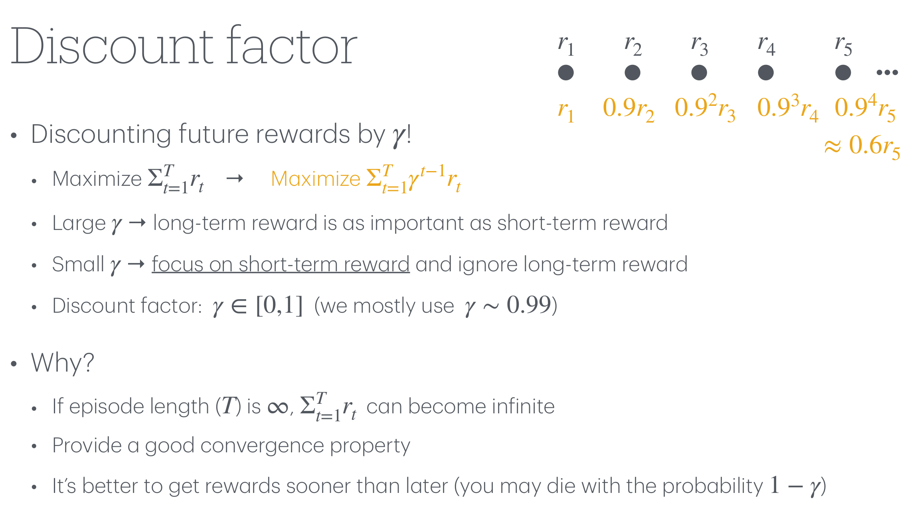
9.2 할인이 들어간 목적함수와 벨만 방정식
할인을 도입하면 앞서 세운 식들이 일제히 바뀝니다. 바뀌는 자리는 미래를 가리키는 항 앞뿐입니다.
| 대상 | 할인 없음 | 할인 있음 |
|---|---|---|
| 목적함수 | \(\mathbb{E}_{\tau \sim \pi(\tau)} \Sigma_{t=1}^{T} r(\mathbf{s}_t, \mathbf{a}_t)\) | \(\mathbb{E}_{\tau \sim \pi(\tau)} \Sigma_{t=1}^{T} \gamma^{t-1} r(\mathbf{s}_t, \mathbf{a}_t)\) |
| 벨만 (상태-행동 가치) | \(\mathbb{E}_{\mathbf{s}_{t+1}}[r_t + V^\pi(\mathbf{s}_{t+1})]\) | \(\mathbb{E}_{\mathbf{s}_{t+1}}[r_t + \gamma V^\pi(\mathbf{s}_{t+1})]\) |
| 벨만 (상태 가치) | \(\mathbb{E}_{\mathbf{a}_t, \mathbf{s}_{t+1}}[r_t + V^\pi(\mathbf{s}_{t+1})]\) | \(\mathbb{E}_{\mathbf{a}_t, \mathbf{s}_{t+1}}[r_t + \gamma V^\pi(\mathbf{s}_{t+1})]\) |
목적함수에서는 \(t\)번째 보상에 \(\gamma^{t-1}\)이 붙는 반면, 벨만 방정식에서는 다음 상태의 가치에만 \(\gamma\)가 한 번 붙습니다. 두 표기는 모순이 아니라 같은 것의 두 관점입니다 — 벨만 방정식은 한 스텝씩 재귀적으로 펼쳐지므로, \(t\)번 펼치면 \(\gamma\)가 \(t\)번 곱해져 목적함수의 \(\gamma^{t-1}\)이 복원됩니다.
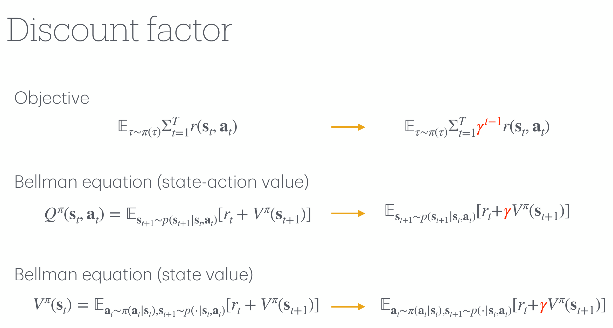
10. 남은 보상의 더 나은 추정 (Better Estimate of Reward to Go)
가치 함수를 손에 넣었으니, 이제 5절에서 얻은 \(R_t(\tau)\)를 그것으로 교체할 차례입니다. 강의가 이 절의 부제로 단 문장이 그대로 요지입니다.
Q-값은 남은 보상을 여러 궤적으로 추정한다 (Q-value estimates reward to go with multiple trajectories).
10.1 표본 하나로 만든 추정과 참값의 거리
현재 추정식의 가중치 자리에 들어 있는 것은 표본 궤적 하나에서 실제로 더한 값입니다. 이를 \(\hat{Q}_t^i\)로 부르면,
\[ \hat{Q}_t^i \approx \sum_{t'=t}^{T} r(\mathbf{s}_{t'}^i, \mathbf{a}_{t'}^i) \]
이고, 이것은 상태 \(\mathbf{s}_t^i\)에서 행동 \(\mathbf{a}_t^i\)를 택했을 때의 기대 총보상에 대한 몬테카를로 추정(Monte-Carlo estimate)입니다. 반면 참값은 다음과 같습니다.
\[ Q^{\pi_\theta}(\mathbf{s}_t, \mathbf{a}_t) = \sum_{t'=t}^{T} \mathbb{E}_{\pi_\theta} \big[ r(\mathbf{s}_{t'}, \mathbf{a}_{t'}) \mid \mathbf{s}_t, \mathbf{a}_t \big] \]
- \(\hat{Q}_t^i\)는 표본 크기 1짜리 추정입니다. 같은 \((\mathbf{s}_t, \mathbf{a}_t)\)에서 출발해도 이후 전개가 달라지므로 실행할 때마다 값이 크게 흔들립니다.
- \(Q^{\pi_\theta}\)는 그 흔들림을 이미 평균 낸 값입니다. 강의의 논리는 단순합니다 — \(\hat{Q}_t^i\)의 추정이 좋아지면 경사도 좋아지니, 아예 참 \(Q^{\pi_\theta}\)를 쓰면 어떨까?
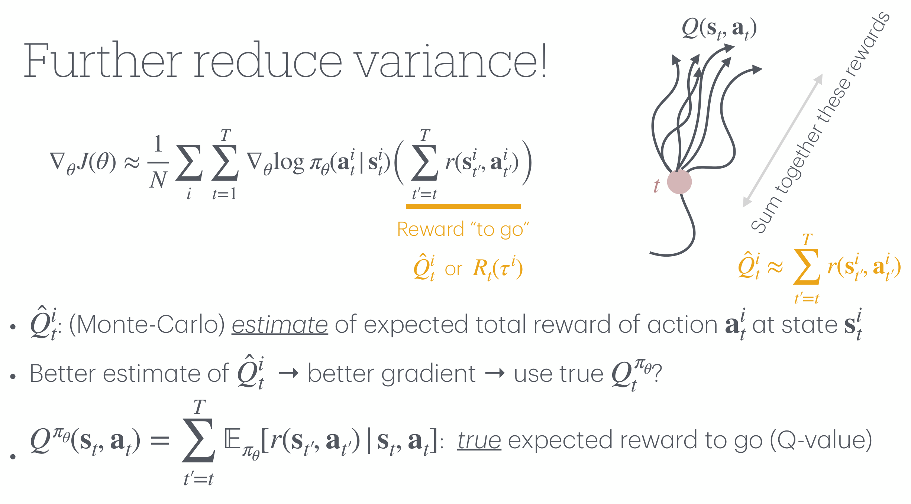
10.2 교체와 그 대가
교체 결과는 다음과 같습니다.
\[ \nabla_\theta J(\theta) \approx \frac{1}{N} \sum_{i} \sum_{t=1}^{T} \nabla_\theta \log \pi_\theta(\mathbf{a}_t^i \mid \mathbf{s}_t^i) \, \underbrace{Q^{\pi_\theta}(\mathbf{s}_t^i, \mathbf{a}_t^i)}_{\text{참 남은 보상}} \]
문제는 참 \(Q^{\pi_\theta}\)를 우리가 모른다는 것입니다. 강의는 두 가지 길을 제시합니다.
- 궤적을 아주 많이 뽑는다. 같은 \((\mathbf{s}_t, \mathbf{a}_t)\)에서 출발하는 궤적을 다수 모아 평균 내면 참값에 가까워집니다. 그러나 이는 지난 회차의 “해법 1: 큰 \(N\)”과 같은 비용 문제에 부딪힙니다.
- \(Q^{\pi_\theta}\)를 학습한다. 8절에서 \(V_\phi\)를 적합시킨 것과 똑같은 방식으로, 파라미터 \(\phi\)를 갖는 함수를 회귀로 학습시킵니다.
두 번째 길이 이번 강의의 답이며, 그 순간 정책 \(\theta\)와 평가자 \(\phi\)라는 두 개의 학습 대상이 확정됩니다.
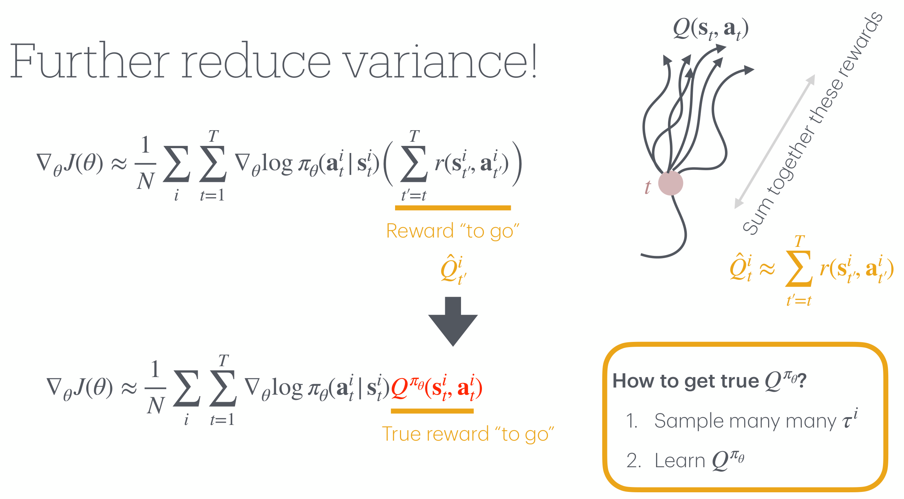
11. 베이스라인 (Baseline)
세 번째이자 마지막 무기입니다. 강의는 5절과 똑같은 형식의 문장으로 이 절을 엽니다.
\(\pi(\mathbf{a}_t \mid \mathbf{s}_t)\)는 \(b(\mathbf{s}_t)\)에 영향을 주지 않으며, 그 역도 마찬가지입니다.
11.1 아무 \(b\)나 빼도 기댓값은 그대로다
가중치에서 행동과 무관한 임의의 함수 \(b(\mathbf{s}_t)\)를 빼 봅니다.
\[ \nabla_\theta J(\theta) = \mathbb{E}_{\tau \sim \pi_\theta(\tau)} \sum_{t=1}^{T} \nabla_\theta \log \pi_\theta(\mathbf{a}_t \mid \mathbf{s}_t) R_t(\tau) = \mathbb{E}_{\tau \sim \pi_\theta(\tau)} \sum_{t=1}^{T} \nabla_\theta \log \pi_\theta(\mathbf{a}_t \mid \mathbf{s}_t) \big[ R_t(\tau) - b(\mathbf{s}_t) \big] \]
두 번째 등호가 성립하려면 빼 낸 부분의 기댓값이 0이어야 합니다. \(\pi_\theta(\tau)\)와 \(b\)가 독립이므로,
\[ \mathbb{E}_{\tau \sim \pi_\theta(\tau)} \sum_{t=1}^{T} \nabla_\theta \log \pi_\theta(\mathbf{a}_t \mid \mathbf{s}_t) \, b(\mathbf{s}_t) = \sum_{t=1}^{T} \underbrace{\mathbb{E}_{\tau \sim \pi_\theta(\tau)} \big[ \nabla_\theta \log \pi_\theta(\mathbf{a}_t \mid \mathbf{s}_t) \big]}_{= \, 0} \; \mathbb{E}_{\tau \sim \pi_\theta(\tau)} \big[ b(\mathbf{s}_t) \big] = 0 \]
이 되어, 베이스라인을 빼는 것은 기댓값 측면에서 불편(unbiased)합니다. 근거는 이번에도 4절의 항등식 (ii)입니다.
슬라이드는 \(\nabla_\theta \log \pi_\theta(\mathbf{a}_t \mid \mathbf{s}_t)\)와 \(b(\mathbf{s}_t)\)의 독립성을 근거로 기댓값을 두 인수의 곱으로 분리했습니다. 표준 교과서는 같은 결론을 상태로 조건부를 잡아 적는데, 그러면 “왜 \(b\)가 \(\mathbf{s}_t\)에만 의존해야 하는지”가 식 안에서 곧바로 드러납니다.
\[ \mathbb{E}\big[ \nabla_\theta \log \pi_\theta(\mathbf{a}_t \mid \mathbf{s}_t) \, b(\mathbf{s}_t) \big] = \mathbb{E}_{\mathbf{s}_t} \Big[ b(\mathbf{s}_t) \underbrace{\mathbb{E}_{\mathbf{a}_t \sim \pi_\theta(\cdot \mid \mathbf{s}_t)} \big[ \nabla_\theta \log \pi_\theta(\mathbf{a}_t \mid \mathbf{s}_t) \big]}_{= \, 0} \Big] = 0 \]
\(\mathbf{s}_t\)를 고정하면 \(b(\mathbf{s}_t)\)는 상수가 되어 안쪽 기댓값 밖으로 빠져나오고, 안쪽에 남은 것은 항등식 (ii)에 의해 정확히 0입니다.
여기서 \(b\)가 \(\mathbf{a}_t\)에 의존했다면 상수로 빼낼 수 없어 이 논증 전체가 무너집니다. 12절에서 후보 중 \(Q(\mathbf{s}_t, \mathbf{a}_t)\)가 탈락하는 이유가 바로 이것입니다.
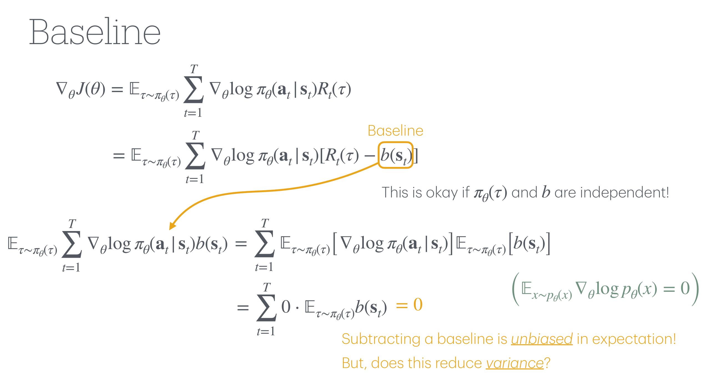
11.2 남은 물음
기댓값이 같다는 것은 확인했습니다. 그러나 그것만으로는 베이스라인을 쓸 이유가 되지 못합니다. 강의는 슬라이드 한 장을 더 써서 이 지점을 못 박습니다 — 베이스라인은 인과성 논증과 같은 구조로 기댓값에서 0이 되므로, 넣은 식은 원래 식과 같은 기댓값을 갖되 “더 작은 분산을 가질 수 있다(can have smaller variance)”는 것입니다.
“가질 수 있다”라는 조건부 표현에 주목해야 합니다. 5절에서 제거한 항은 무조건 분산을 줄였지만, 베이스라인은 어떤 \(b\)를 고르느냐에 따라 분산이 줄 수도 늘 수도 있습니다. 그래서 다음 절의 과제는 자연스럽게 “어떤 \(b\)를 골라야 하는가”가 됩니다.
12. 베이스라인은 분산을 어떻게 바꾸는가 (How Does Variance Change with Baseline?)
12.1 두 분산을 나란히 적는다
분산의 정의 \(\mathrm{Var}(X) = \mathbb{E}[X^2] - \mathbb{E}[X]^2\)를 두 추정량에 각각 적용합니다. 표기를 줄이기 위해 \(g_t = \nabla_\theta \log \pi_\theta(\mathbf{a}_t \mid \mathbf{s}_t)\)로 쓰겠습니다.
베이스라인 없음:
\[ \mathrm{Var}\big( \nabla_\theta J(\theta) \big) = \underbrace{\mathbb{E}_{\tau \sim \pi_\theta(\tau)} \Big[ \Big( \sum_{t=1}^{T} g_t R_t(\tau) \Big)^2 \Big]}_{\text{(1) 이차 적률}} - \underbrace{\mathbb{E}_{\tau \sim \pi_\theta(\tau)} \Big[ \sum_{t=1}^{T} g_t R_t(\tau) \Big]^2}_{\text{(2) 평균의 제곱}} \]
베이스라인 있음:
\[ \mathrm{Var}\big( \nabla_\theta J(\theta) \big) = \underbrace{\mathbb{E}_{\tau \sim \pi_\theta(\tau)} \Big[ \Big( \sum_{t=1}^{T} g_t \big( R_t(\tau) - b(\mathbf{s}_t) \big) \Big)^2 \Big]}_{\text{(1')}} - \underbrace{\mathbb{E}_{\tau \sim \pi_\theta(\tau)} \Big[ \sum_{t=1}^{T} g_t \big( R_t(\tau) - b(\mathbf{s}_t) \big) \Big]^2}_{\text{(2')}} \]
11절에서 기댓값이 같다는 것을 증명했으므로 (2) \(=\) (2’)입니다. 따라서 두 분산의 대소는 (1)과 (1’)의 대소만으로 결정됩니다.
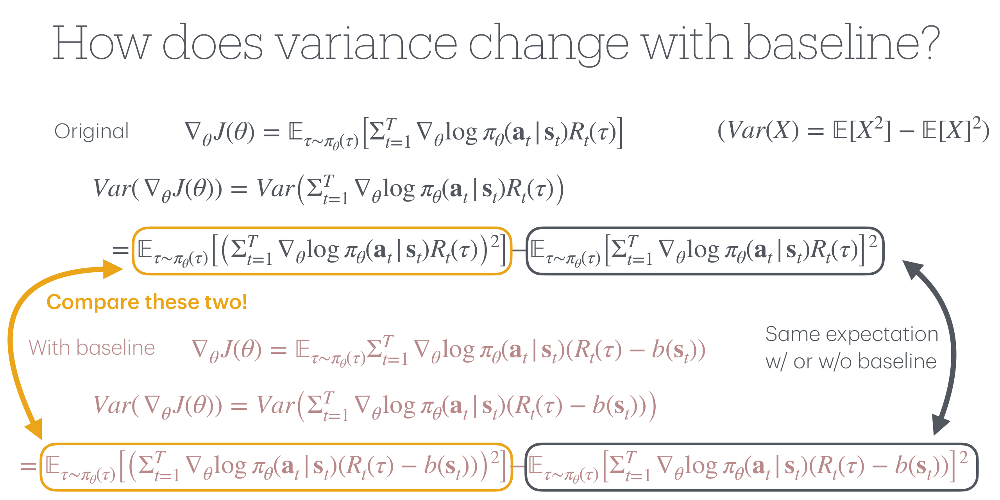
12.2 어떤 \(b\)를 골라야 하는가
(1)과 (1’)를 비교하면 판단 기준이 나옵니다. (1’)의 피적분항은 \(g_t\)에 \(\big(R_t(\tau) - b(\mathbf{s}_t)\big)\)가 곱해진 형태이므로, 그 곱을 작게 만들수록 이차 적률이 작아집니다. 강의의 결론은 한 줄입니다.
\(R_t(\tau) - b(\mathbf{s}_t) \approx 0\)이면 분산을 줄일 수 있습니다.
그렇다면 \(R_t(\tau)\)에 대한 최선의 추측(best guess)은 무엇일까요? 후보는 셋입니다.
| 후보 | 식 | 판정 |
|---|---|---|
| \(R_t(\tau)\) 자신 | \(\Sigma_{t'=t}^{T} r(\mathbf{s}_{t'}, \mathbf{a}_{t'})\) | 표본 하나의 실현값 — 베이스라인으로 쓰면 가중치가 항상 0이 되어 학습이 사라집니다 |
| \(Q(\mathbf{s}_t, \mathbf{a}_t)\) | \(\Sigma_{t'=t}^{T} \mathbb{E}_{\tau \sim \pi_\theta(\tau \mid \mathbf{s}_t, \mathbf{a}_t)}[r(\mathbf{s}_{t'}, \mathbf{a}_{t'})]\) | 탈락 — \(\mathbf{a}_t\)에 의존하므로 베이스라인의 자격이 없습니다 |
| \(V(\mathbf{s}_t)\) | \(\Sigma_{t'=t}^{T} \mathbb{E}_{\tau \sim \pi_\theta(\tau \mid \mathbf{s}_t)}[r(\mathbf{s}_{t'}, \mathbf{a}_{t'})]\) | 채택 — \(\mathbf{s}_t\)에만 의존하면서 \(R_t(\tau)\)의 평균값입니다 |
강의가 \(Q\) 위에 사선을 긋고 남긴 조건이 “\(b(\mathbf{s}_t)\)는 오직 \(\mathbf{s}_t\)에만 의존해야 한다”입니다. 11절의 불편성 증명이 바로 그 조건 위에 서 있었으므로, 이를 어기면 추정량이 편향됩니다.
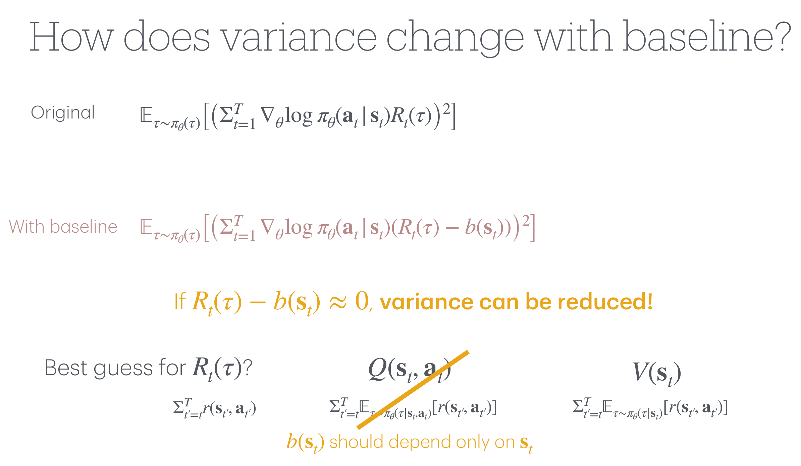
13. 베이스라인으로 분산 줄이기 (Reduce Variance Using Baseline)
13.1 상태 가치를 베이스라인으로
앞 절의 심사 결과를 대입하면 다음을 얻습니다.
\[ \nabla_\theta J(\theta) = \mathbb{E}_{\tau \sim \pi_\theta(\tau)} \sum_{t=1}^{T} \nabla_\theta \log \pi_\theta(\mathbf{a}_t \mid \mathbf{s}_t) \big[ R_t(\tau) - b(\mathbf{s}_t) \big] \;\longrightarrow\; \mathbb{E}_{\tau \sim \pi_\theta(\tau)} \sum_{t=1}^{T} \nabla_\theta \log \pi_\theta(\mathbf{a}_t \mid \mathbf{s}_t) \big[ R_t(\tau) - V^{\pi_\theta}(\mathbf{s}_t) \big] \]
강의가 붙인 직관은 이렇습니다.
- 행동 \(\mathbf{a}_t\)가 평균적인 \(\pi_\theta\)보다 잘했다면 괄호가 양수가 되어, 그 행동의 확률을 끌어올립니다.
- 행동 \(\mathbf{a}_t\)가 평균적인 \(\pi_\theta\)보다 못했다면 괄호가 음수가 되어, 그 행동의 확률을 끌어내립니다.
베이스라인이 없을 때는 \(R_t(\tau)\)가 곧 가중치였습니다. 만약 보상이 항상 양수인 환경이라면 — 예컨대 살아 있는 매 스텝마다 \(+1\)을 주는 과제라면 — 모든 행동의 확률이 예외 없이 올라갑니다. 상대적으로 덜 올라간 행동이 결과적으로 밀려나는 방식으로 학습이 진행되긴 하지만, 그 과정은 느리고 표본에 따라 크게 흔들립니다.
\(V^{\pi_\theta}(\mathbf{s}_t)\)를 빼고 나면 기준점이 “이 상태에서의 평균적인 성과”로 옮겨 갑니다. 평균보다 나은 행동만 확률이 오르고 못한 행동은 내려가므로, 같은 표본에서 훨씬 또렷한 방향 신호가 나옵니다. 12절의 기준 \(R_t(\tau) - b(\mathbf{s}_t) \approx 0\)을 만족시킨다는 말은 결국 가중치의 크기를 평균 근처로 끌어내려 요동을 줄인다는 뜻입니다.
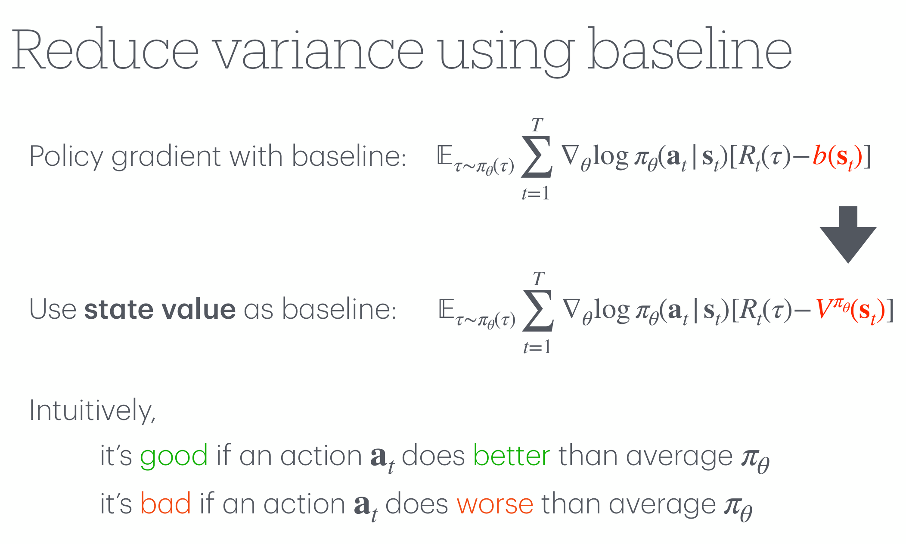
13.2 남은 보상마저 \(Q\)로 바꾸면 — 이점(advantage)
여기서 10절의 결론을 한 겹 더 얹습니다. 괄호 안의 \(R_t(\tau)\)도 참 \(Q^{\pi_\theta}\)로 교체하는 것입니다.
\[ \nabla_\theta J(\theta) = \mathbb{E}_{\tau \sim \pi_\theta(\tau)} \sum_{t=1}^{T} \nabla_\theta \log \pi_\theta(\mathbf{a}_t \mid \mathbf{s}_t) \big[ \underbrace{Q^{\pi_\theta}(\mathbf{s}_t, \mathbf{a}_t) - V^{\pi_\theta}(\mathbf{s}_t)}_{A^{\pi_\theta}(\mathbf{s}_t, \mathbf{a}_t) \; : \; \text{이점}} \big] \]
괄호 안이 정확히 7절에서 정의한 이점 \(A^{\pi_\theta}(\mathbf{s}_t, \mathbf{a}_t)\)입니다. 강의는 이 식에 상자를 치고 두 개의 이름표를 붙입니다 — “가장 흔히 쓰이는 형태(Most commonly used in practice!)”이자 “actor-critic 알고리즘”입니다.
이름의 유래는 식 안에 그대로 드러나 있습니다.
- 배우(actor): \(\nabla_\theta \log \pi_\theta(\mathbf{a}_t \mid \mathbf{s}_t)\) — 행동을 고르는 정책이며, 파라미터는 \(\theta\)입니다.
- 비평가(critic): \(A^{\pi_\theta}(\mathbf{s}_t, \mathbf{a}_t) = Q^{\pi_\theta} - V^{\pi_\theta}\) — 그 행동이 평균보다 나았는지를 채점하는 가치 함수이며, 파라미터는 \(\phi\)입니다.
지난 회차 마지막에 예고된 “아래첨자 \(\phi\)의 등장”이 여기서 완결됩니다. 정책은 더 이상 총보상이라는 거친 신호가 아니라, 따로 학습된 평가자가 매긴 점수를 보고 갱신됩니다.
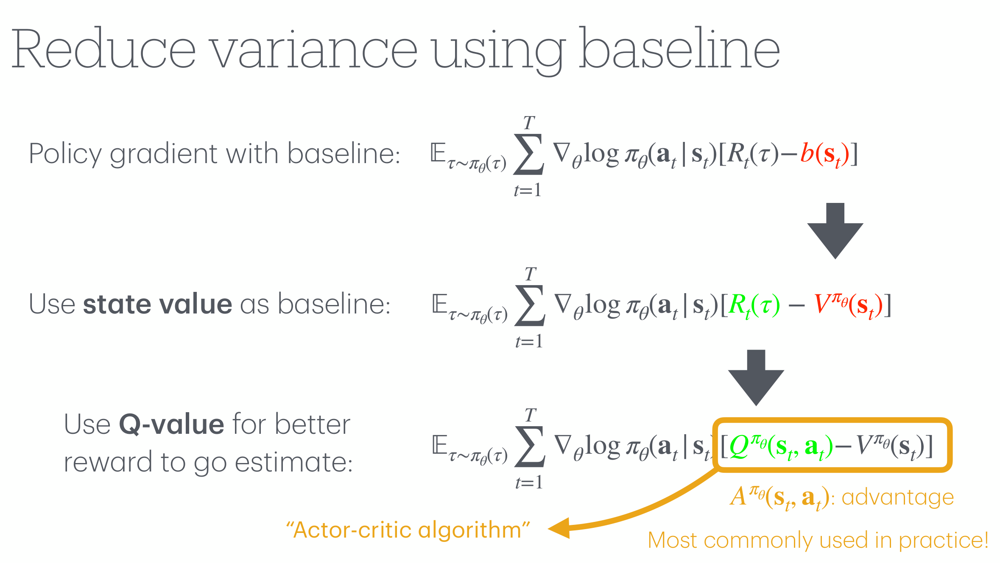
14. 정책 경사의 분산 감소 요약 (Summary of Reducing Variance of Policy Gradient)
3절에서 비워 둔 물음표 자리를 이제 네 가지로 채워 놓고 비교합니다.
\[ \nabla_\theta J(\theta) \approx \frac{1}{N} \sum_{i=1}^{N} \Big( \sum_{t=1}^{T} \nabla_\theta \log \pi_\theta(\mathbf{a}_t^i \mid \mathbf{s}_t^i) \Big) \big( \, \boldsymbol{?} \, \big) \]
| 무엇으로 채우는가 | 식 | 그 행동을 무엇으로 평가하는가 |
|---|---|---|
| 보상의 합 (sum of rewards) | \(\Sigma_{t=1}^{T} r(\mathbf{s}_t^i, \mathbf{a}_t^i)\) | 좋은 총(total) 보상으로 이어지는 행동 |
| 남은 보상 (reward to-go) | \(\Sigma_{t'=t}^{T} r(\mathbf{s}_{t'}^i, \mathbf{a}_{t'}^i)\) | 하나의(one) 궤적에서 좋은 미래(future) 보상으로 이어지는 행동 |
| 남은 보상의 더 나은 추정 | \(Q_\phi^{\pi_\theta}(\mathbf{s}_t^i, \mathbf{a}_t^i)\) | 여러(many) 궤적에서 좋은 미래 보상으로 이어지는 행동 |
| 이점 (advantage) | \(A_\phi^{\pi_\theta}(\mathbf{s}_t^i, \mathbf{a}_t^i) = Q_\phi^{\pi_\theta}(\mathbf{s}_t^i, \mathbf{a}_t^i) - V_\phi^{\pi_\theta}(\mathbf{s}_t^i)\) | 더 나은(better) 미래 보상으로 이어지는 행동 |
네 줄은 나란한 선택지가 아니라 한 단계씩 잡음을 걷어 내는 사다리이며, 각 계단이 이번 강의의 한 절씩에 대응합니다.
- ① → ② (5절, 인과성): 시각 \(t\) 이전의 보상을 떼어 냅니다. 그 항은 평균 0이지만 분산은 0이 아니므로, 지우면 순수하게 이득입니다.
- ② → ③ (10절, 가치 함수): 한 궤적의 실현값을 여러 궤적에 걸쳐 학습된 함수로 바꿉니다. 환경의 우연이 평균되어 사라집니다.
- ③ → ④ (11–13절, 베이스라인): 상태 자체가 좋아서 생긴 몫을 \(V_\phi\)로 상쇄합니다. 남는 것은 행동 선택의 차이뿐입니다.
세 번째 줄부터 등장하는 \(Q_\phi^{\pi_\theta}\)와 \(V_\phi^{\pi_\theta}\)에서 위첨자는 어떤 정책 아래의 값인가(\(\pi_\theta\))를, 아래첨자는 그 함수 자체의 파라미터(\(\phi\))를 가리킵니다.
앞의 두 줄에는 \(\phi\)가 없습니다. 보상의 합도 남은 보상도 관측된 값을 더하기만 하면 얻어지기 때문입니다. 반면 세 번째 줄부터는 학습해야 할 함수가 생기므로, 알고리즘에 두 번째 최적화 루프가 추가됩니다. 16절의 actor-critic 순환 도식에서 “Estimate return / Fit model” 칸이 실제 학습 단계로 바뀌는 것이 바로 이 때문입니다.
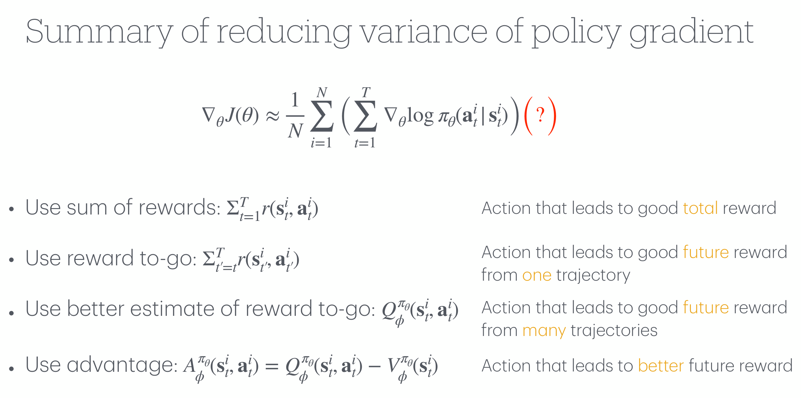
15. REINFORCE
식의 개선이 끝났으니, 이제 그것이 알고리즘의 구조를 어떻게 바꾸는지를 볼 차례입니다. 먼저 출발점인 REINFORCE를 순환 도식 위에 다시 얹습니다.
| 단계 | REINFORCE가 채우는 방식 |
|---|---|
| ① Roll-out policy | \(\pi_\theta\)를 \(N\)개의 궤적(trajectories)만큼 롤아웃해 \((\mathbf{s}_1, \mathbf{a}_1, r_1), (\mathbf{s}_2, \mathbf{a}_2, r_2), \ldots\)를 얻습니다 |
| ② Estimate return / Fit model | \(r(\tau^i) = \Sigma_t r_t^i\) — 그 궤적에서 실제로 받은 보상을 그냥 더합니다 |
| ③ Improve policy | \(\nabla_\theta J(\theta) \approx \frac{1}{N}\Sigma_i \big(\Sigma_t \nabla_\theta \log \pi_\theta(\mathbf{a}_t^i \mid \mathbf{s}_t^i)\big) r(\tau^i)\)로 경사 상승합니다 |
강의가 이 도식 위에 붙인 진단은 한 줄입니다.
모든 경사 갱신이 새로운 궤적을 요구합니다 → 표본 비효율적(sample inefficient)입니다.
핵심은 ①에서 세는 단위가 궤적이라는 점입니다. 에피소드 하나가 끝나야 \(r(\tau^i) = \Sigma_t r_t^i\)를 계산할 수 있으므로, 정책은 에피소드가 끝날 때까지 한 번도 갱신되지 못하고 기다려야 합니다.
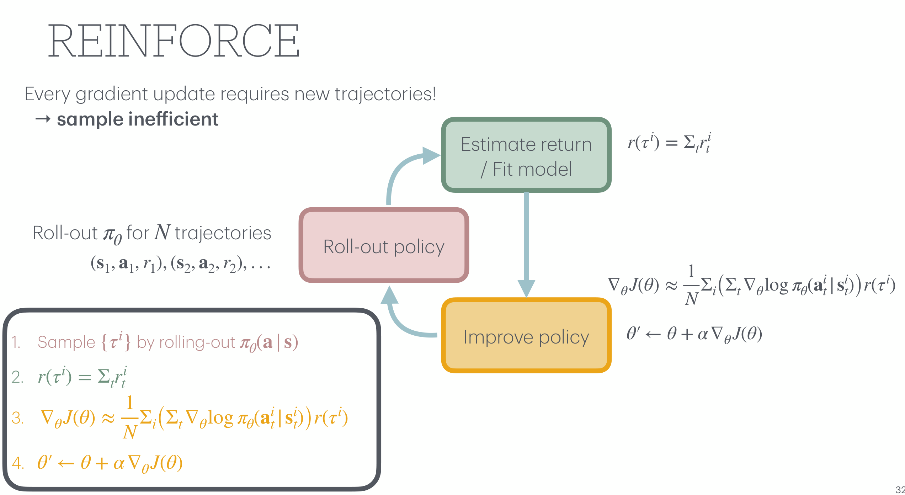
16. 행위자–비평가 알고리즘 (Actor-Critic Algorithm)
같은 순환 도식에 13절의 결론을 얹으면 actor-critic이 됩니다. 바뀐 칸은 둘입니다.
| 단계 | REINFORCE | Actor-critic |
|---|---|---|
| ① Roll-out policy | \(\pi_\theta\)를 \(N\)개 궤적만큼 롤아웃 | \(\pi_\theta\)를 \(N\) 스텝(steps)만큼 롤아웃해 \((\mathbf{s}_1, \mathbf{a}_1, r_1), \ldots, (\mathbf{s}_N, \mathbf{a}_N, r_N)\) 수집 |
| ② Estimate return / Fit model | \(r(\tau^i) = \Sigma_t r_t^i\) (단순 합산) | \(V_\phi^{\pi_\theta}(\mathbf{s})\) 또는 \(Q_\phi^{\pi_\theta}(\mathbf{s}, \mathbf{a})\)를 학습(fit) |
| ③ Improve policy | \(\frac{1}{N}\Sigma_i (\Sigma_t \nabla_\theta \log \pi_\theta) \, r(\tau^i)\) | \(\frac{1}{N}\Sigma_{i=1}^{N} \nabla_\theta \log \pi_\theta(\mathbf{a}_i \mid \mathbf{s}_i) \, A_\phi^{\pi_\theta}(\mathbf{s}_i, \mathbf{a}_i)\) |
| ④ 갱신 | \(\theta' \leftarrow \theta + \alpha \nabla_\theta J(\theta)\) | \(\theta' \leftarrow \theta + \alpha \nabla_\theta J(\theta)\) (동일) |
경사식은 이점 대신 \(Q\)를 그대로 써서 \(\frac{1}{N}\Sigma_{i=1}^{N} \nabla_\theta \log \pi_\theta(\mathbf{a}_i \mid \mathbf{s}_i) Q_\phi^{\pi_\theta}(\mathbf{s}_i, \mathbf{a}_i)\)로 적을 수도 있습니다.
강의가 이 도식 위에 적은 세 줄이 actor-critic의 전부입니다.
정책(actor)이 가치 함수(critic)로부터 배웁니다 → 갱신에 전체 궤적을 모을 필요가 없습니다 → 표본 효율적입니다.
세 줄의 인과 관계를 풀어 보면 이렇습니다. REINFORCE의 가중치 \(r(\tau^i) = \Sigma_t r_t^i\)는 에피소드가 끝나야 계산됩니다. 정의상 그 궤적의 모든 보상을 다 받아 봐야 하기 때문입니다.
반면 actor-critic의 가중치 \(A_\phi^{\pi_\theta}(\mathbf{s}_i, \mathbf{a}_i)\)는 신경망에 \((\mathbf{s}_i, \mathbf{a}_i)\)를 넣으면 즉시 나오는 값입니다. 미래를 실제로 살아 볼 필요 없이 평가자가 대신 예측해 주므로, 롤아웃을 중간에 끊고 곧바로 갱신할 수 있습니다.
그래서 ①의 단위가 궤적에서 스텝으로 바뀝니다. 이 한 글자의 차이가 다음 절에서 정량적인 격차로 드러납니다.
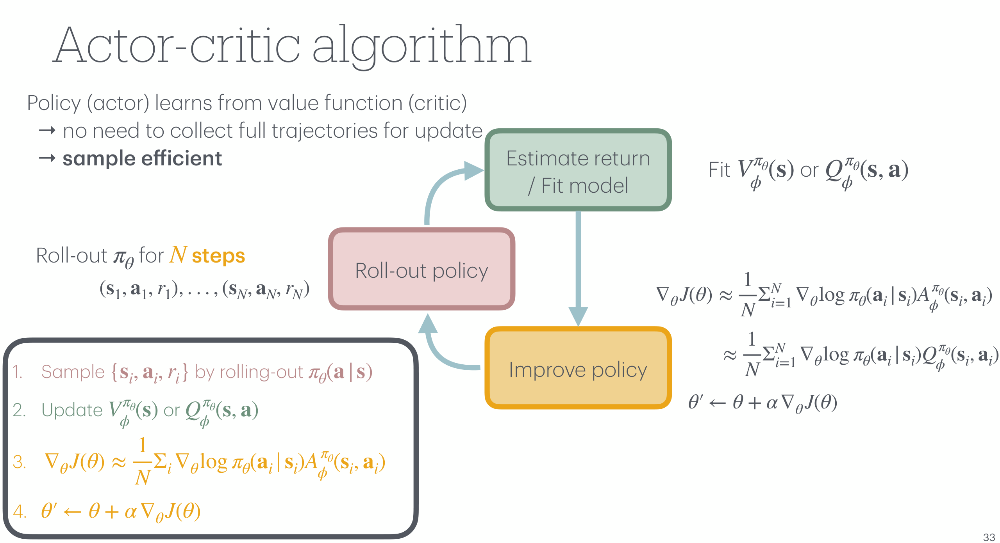
17. 행위자–비평가는 REINFORCE보다 표본 효율적이다 (Actor-Critic is Sample Efficient than REINFORCE)
강의는 두 알고리즘을 나란히 놓고, 구체적인 숫자 하나로 격차를 보여 줍니다.
\(K = 1\)(궤적 1개), 에피소드 길이 \(= 1000\), \(N = 10\)(스텝 10개)이라고 두면,
- REINFORCE는 정책을 1000 스텝마다 한 번 갱신합니다.
- Actor-critic은 정책을 10 스텝마다 한 번 갱신합니다.
\(\therefore\) 같은 표본 수를 쓰더라도 actor-critic이 REINFORCE보다 정책 갱신을 훨씬 많이 수행합니다.
두 알고리즘의 네 단계를 나란히 적으면 차이가 ①과 ②에만 있다는 것이 확인됩니다.
| 단계 | REINFORCE | Actor-critic |
|---|---|---|
| 1 | \(K\)개의 궤적 \(\{\tau^i\}\)를 \(\pi_\theta(\mathbf{a} \mid \mathbf{s})\) 롤아웃으로 수집 | \(N\)개의 스텝 \(\{\mathbf{s}_i, \mathbf{a}_i, r_i\}\)를 \(\pi_\theta(\mathbf{a} \mid \mathbf{s})\) 롤아웃으로 수집 |
| 2 | \(r(\tau^i) = \Sigma_t r_t^i\) | \(V_\phi^{\pi_\theta}(\mathbf{s})\) 또는 \(Q_\phi^{\pi_\theta}(\mathbf{s}, \mathbf{a})\) 갱신 |
| 3 | \(\nabla_\theta J(\theta) \approx \frac{1}{K}\Sigma_i \big(\Sigma_t \nabla_\theta \log \pi_\theta(\mathbf{a}_t^i \mid \mathbf{s}_t^i)\big) r(\tau^i)\) | \(\nabla_\theta J(\theta) \approx \frac{1}{N}\Sigma_i \nabla_\theta \log \pi_\theta(\mathbf{a}_i \mid \mathbf{s}_i) A_\phi^{\pi_\theta}(\mathbf{s}_i, \mathbf{a}_i)\) |
| 4 | \(\theta' \leftarrow \theta + \alpha \nabla_\theta J(\theta)\) | \(\theta' \leftarrow \theta + \alpha \nabla_\theta J(\theta)\) |
여기서 말하는 표본 효율은 모아 놓은 표본 하나당 정책 갱신을 몇 번 하느냐에 대한 것입니다. 지난 회차에서 지적한 온폴리시 제약 자체가 사라진 것은 아닙니다 — actor-critic도 갱신 직후의 데이터는 여전히 이전 정책의 표본이므로 원칙적으로는 재사용할 수 없습니다.
달라진 것은 한 번의 갱신을 위해 기다려야 하는 표본의 양입니다. REINFORCE는 에피소드 전체(1000 스텝)를 채워야 비로소 한 걸음을 뗄 수 있었지만, actor-critic은 10 스텝이면 한 걸음을 뗍니다. 같은 온폴리시 제약 아래에서도 훨씬 촘촘하게 움직일 수 있게 된 것이 이번 강의가 얻어 낸 실질적인 성과입니다.
온폴리시 제약 자체를 푸는 일 — 과거 정책의 데이터를 재사용하는 일 — 은 다음 회차의 중요도 표본추출(importance sampling)과 PPO가 다룹니다.
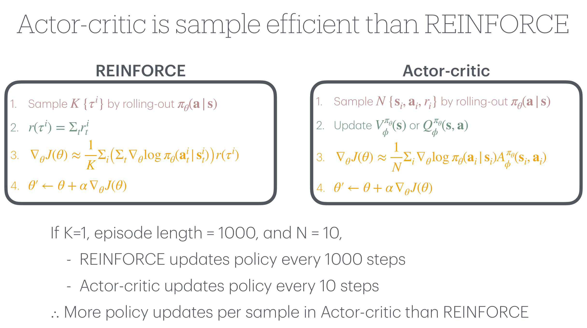
18. 다음 강의 (Next Class)
강의는 세 가지 주제를 예고하며 마칩니다.
- N-step return — 8절에서 본 TD 목표는 한 스텝만 실제 보상을 쓰고 나머지는 부트스트랩에 맡겼습니다. 몇 스텝까지 실제 보상을 쓸 것인가를 조절해 편향과 분산의 맞교환을 다루게 됩니다.
- 중요도 표본추출 (importance sampling) — 3절의 두 번째 단점인 온폴리시 제약을 정면으로 다룹니다. 다른 정책이 모은 데이터로 현재 정책의 기댓값을 추정하는 장치입니다.
- PPO — 위 두 재료 위에 세워지는 실용 알고리즘입니다.
이번 회차가 “가중치 자리를 무엇으로 채울 것인가”에 답해 actor-critic이라는 작동하는 알고리즘을 손에 쥐여 주었다면, 다음 회차는 남아 있던 온폴리시라는 마지막 약점을 공격합니다.
정리하며 (Closing Remarks)
이번 강의의 논리 사슬을 한 장으로 요약하면 다음과 같습니다.
| 단계 | 내용 | 근거 |
|---|---|---|
| ① 출발점 재확인 | 로그 미분 항등식과 궤적 로그 확률의 소거로 얻은 정책 경사는 참 목적함수에 대한 불편 추정량이다 | 1–2절 (Direct policy differentiation, Policy gradient) |
| ② 고칠 자리 확정 | 얻은 대가는 고분산과 온폴리시이며, 이번 회차가 손댈 수 있는 곳은 가중치 괄호 하나뿐이다 | 3절 (Summary of policy gradient methods) |
| ③ 공용 도구 확보 | \(\nabla_\theta p = p \nabla_\theta \log p\)와 \(\mathbb{E}_{x \sim p_\theta}[\nabla_\theta \log p_\theta(x)] = 0\) — 행동과 무관한 항은 경사에 기여하지 않는다 | 4절 (Useful math) |
| ④ 인과성 적용 | 시각 \(t\) 이전의 보상은 \(\mathbf{a}_t\)와 독립이므로 기댓값 0으로 탈락하고, 남은 보상 \(R_t(\tau)\)만 남는다 | 5.2절 (Reduce variance of policy gradient) |
| ⑤ 첫 번째 이득 정산 | 지운 항은 평균 0이지만 분산은 0이 아니므로, 같은 기댓값에 더 작은 분산을 얻는다 | 5.3절 |
| ⑥ 가치의 정의 | \(V^\pi\)(상태만 고정) · \(Q^\pi\)(상태와 행동 고정) · \(A^\pi = Q^\pi - V^\pi\)(평균 대비 우열) | 6–7절 (Value functions, Summary of “value”s) |
| ⑦ 평가자 학습법 | 참 \(V^{\pi_\theta}\)를 모르므로 TD 목표 \(r_t^i + V_\phi(\mathbf{s}_{t+1}^i)\)에 대한 회귀로 \(V_\phi\)를 적합시킨다 | 8절 (Fit state value function) |
| ⑧ 무한 지평 처리 | 할인 인자 \(\gamma\)를 도입해 합의 발산을 막고, 목적함수와 두 벨만 방정식에 \(\gamma\)를 삽입한다 | 9절 (Discount factor) |
| ⑨ 두 번째 교체 | 한 궤적의 실현값 \(\hat{Q}_t^i\)를 여러 궤적에 걸친 참값 \(Q^{\pi_\theta}\)로 바꾼다 — 환경의 우연이 평균된다 | 10절 (Further reduce variance!) |
| ⑩ 베이스라인 도입 | \(\mathbf{a}_t\)와 무관한 \(b(\mathbf{s}_t)\)를 빼도 기댓값은 불변이다 (근거: ③의 두 번째 항등식) | 11절 (Baseline) |
| ⑪ 베이스라인 선택 | 분산은 \(R_t(\tau) - b(\mathbf{s}_t) \approx 0\)일 때 줄고, \(b\)는 \(\mathbf{s}_t\)에만 의존해야 하므로 \(Q\)는 탈락하고 \(V\)가 채택된다 | 12절 (How does variance change with baseline?) |
| ⑫ 이점의 완성 | 베이스라인 \(V^{\pi_\theta}\)와 교체된 가중치 \(Q^{\pi_\theta}\)가 합류해 \(A^{\pi_\theta} = Q^{\pi_\theta} - V^{\pi_\theta}\)가 되고, 이것이 actor-critic의 정의식이다 | 13절 (Reduce variance using baseline) |
| ⑬ 사다리 정리 | 보상의 합 → 남은 보상 → \(Q_\phi\) → 이점 \(A_\phi\) — total → future/one → future/many → better의 순서로 평가 기준이 정교해진다 | 14절 (Summary of reducing variance) |
| ⑭ 구조 변화 | 평가자가 미래를 예측해 주므로 롤아웃 단위가 궤적에서 스텝으로 바뀌고, 정책(actor)은 가치 함수(critic)에게서 배운다 | 15–16절 (REINFORCE, Actor-critic algorithm) |
| ⑮ 효과 확인 | \(K=1\) · 에피소드 1000 스텝 · \(N=10\)이면 갱신 빈도가 1000 스텝당 1회에서 10 스텝당 1회로 바뀐다 | 17절 (Actor-critic is sample efficient) |
| ⑯ 남은 과제 | 온폴리시 제약은 아직 그대로다 — N-step return · 중요도 표본추출 · PPO가 그 다음 단계다 | 18절 (Next class) |